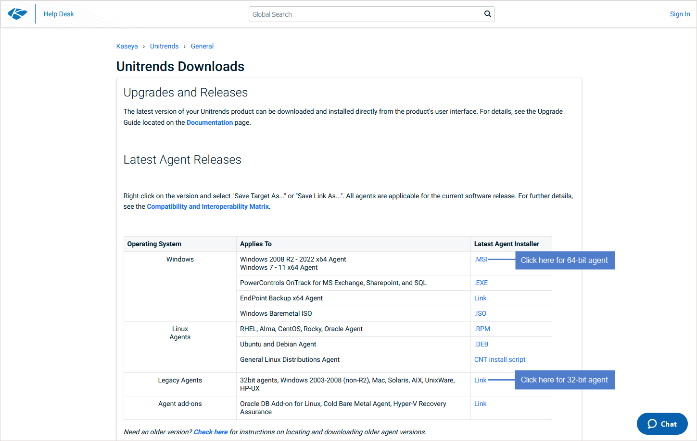
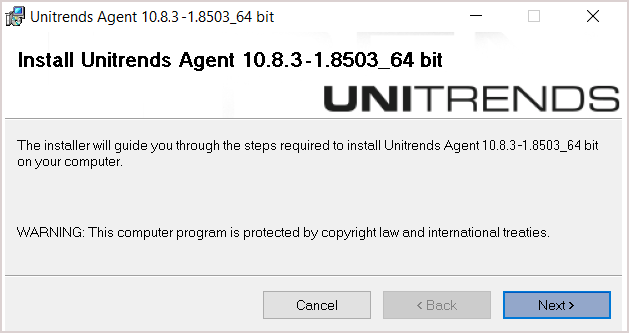
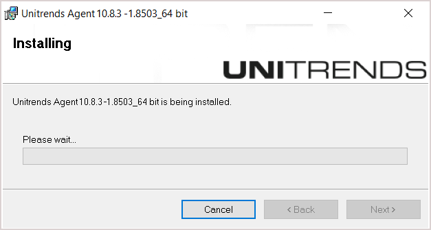

Windows 에이전트 설치#
Windows 대상을 백업하려면 해당 Windows에 에이전트를 설치해야 합니다.
이 에이전트는 파일 백업(File-Level), 이미지 백업(Image-Level) 및 애플리케이션 백업(application)을 실행하는 데 필요합니다.
1. 에이전트 설치 전 요구사항#
Windows 에이전트를 설치하기 전에 아래 요구사항을 충족해야 합니다.
① Unitrends 어플라이언스와 에이전트 버전 호환성
10.8.1 버전부터, 에이전트 설치 프로그램보다 Unitrends 어플라이언스 버전이 더 낮을 경우 오류가 발생할 수 있습니다.
② 관리자 권한
에이전트를 설치하려는 사용자는 Windows 관리자 권한을 가지고 있어야 합니다.
③ 디스크 여유공간
Windows 시스템 드라이브(일반적으로 C:)에 약 1100MB의 여유 공간이 필요합니다.
④ Windows VSS(Volume Shadow Copy Service)
Windows VSS framework가 설치되어 있어야 합니다.
⑤ VSS Writer 요구사항
애플리케이션 백업을 위해 다음 VSS Writer가 필요합니다.:
Exchange : VSS Exchange Writer
SQL Server : VSS SQL Writer
Hyper-V : VSS Hyper-V Writer ⑥ 포트 요구사항
에이전트는 1743, 1745, 888/TCP 포트를 사용합니다.
해당 포트가 다른 프로세스에 의해 사용되면 안됩니다.
⑦ 방화벽 관련 제한
Unitrends는 방화벽을 통한 백업을 공식적으로 지원하지 않습니다.
서버 보안 및 백신 프로그램이 실행 중이라면, [방화벽 예외처리]를 참조해주세요.
2. 에이전트 보안 페어링 요구사항#
10.6.6 버전부터 Unitrends 어플라이언스와 Windows 에이전트는 보안 페어링(secure pairing)을 지원합니다.
이 페어링은 TLS(Transport Layer Security)를 사용해 데이터를 암호화하고, 연결을 인증합니다.
보안 페어링 기능은 다음 조건을 충족해야 실행됩니다.:
① 버전 조건
Unitrends 어플라이언스와 에이전트는 모두 10.6.6 버전 이상이어야 합니다.
Unitrends 어플라이언스 버전은 에이전트 버전과 같거나 높아야 합니다.
② 업그레이드 조건
에이전트 버전을 업그레이드하기 전에 반드시 Unitrends 어플라이언스를 먼저 업그레이드해야 합니다.
10.6.6 버전 이상의 에이전트를 Unitrends 어플라이언스에서 백업하려고 하면 백업 작업이 실패합니다.
③ 페어링 실패 시 대처
10.6.9 이전 버전의 에이전트에서 업그레이드하는 경우, 페어링이 완료되기 전(최대 2시간)에는 백업 작업이 실패할 수 있습니다.
④ 클러스터 백업
Hyper-V 클러스터, SQL 클러스터 또는 파일 서버 클러스터를 백업하려면 10.6.9 이상 버전의 에이전트가 필요합니다.
Unitrends 어플라이언스와 클러스터는 동일한 시간대를 사용해야 합니다.
⑤ Windows XP, 2003, Vista 예외
이러한 운영체제를 백업하려면 10.6.7 버전의 에이전트를 설치해야 합니다. 해당 버전은 보안 페어링 기능을 비활성화합니다.
3. Windows 에이전트 설치 단계#
(1) MSI 에이전트 파일 다운로드
[Unitrends Downloads] 페이지에서 적합한 에이전트 설치 파일을 다운로드하세요.:
32비트 시스템: Unitrends_Agentx86.msi
64비트 시스템: Unitrends_Agentx64.msi 
(2) MSI 파일 실행
다운로드한 MSI 파일(Unitrends_Agentx86.msi 또는 Unitrends_Agentx64.msi) 을 더블 클릭하여 설치 프로그램을 실행합니다.
(3) 설치 진행
Next버튼을 클릭하여 설치를 진행합니다.
**설치 중간에 Cancel버튼을 눌러 설치를 중단할 수 있습니다.  
(4) 버전 확인
설치 중 ”The currently installing agent version is newer than the appliance version” 메시지가 나타나면 Yes를 눌러 설치를 진행합니다.
(5) Volume CBT 드라이버 설치
4. 설치 후 확인사항#
(1) 설치 위치
에이전트는 Windows 시스템 드라이브(일반적으로 C:)의 C:\PCBP 디렉토리에 설치됩니다. (2) Volume CBT 드라이버 설치 여부 확인
Volume CBT 드라이버를 설치한 경우:
설치 완료 후 Rebboot 창이 표시됩니다.
재부팅이 필요한 경우, Yes를 클릭하여 즉시 재부팅하거나 No를 클릭하여 나중에 재부팅할 수 있습니다.
5. 설치 후 주의사항#
(1) 증분 백업 지원
Volume CBT 드라이버가 설치되지 않거나 활성화되지 않으면 이미지 증분 백업은 지원되지 않습니다.
이 경우 모든 증분 백업 작업은 자동으로 전체(Full) 백업으로 전환됩니다.
(2) 드라이버 독립성
Windows 에이전트와 Volume CBT 드라이버는 별도의 패키지로 설치됩니다.
에이전트를 제거해도 드라이버는 자동으로 제거되지 않으며, 제어판 → 프로그램 추가/제거에서 uvcbt.msi를 수동으로 제거해야 합니다.
(3) 설치 파일 위치
C:\PCBP\Installers 디렉토리에 uvcbt.msi 파일이 저장되므로, 언제든지 Volume CBT 드라이버를 다시 설치할 수 있습니다.